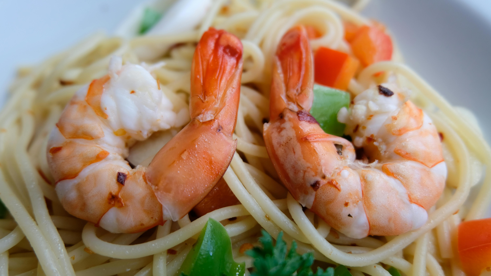

Home
Creamy Lemon Shrimp Pasta

Description
This lovely lemon garlic shrimp dish with spaghetti pasta is deliciously creamy and comes together in just 30 minutes, making it perfect for busy weeknights!
Ingredients
- ¾ (16 ounce) package spaghetti
- 1 pound uncooked medium shrimp, peeled and deveined
- salt and ground black pepper to taste
- 2 tablespoons finely chopped shallots
- 1 tablespoon crushed garlic
- ¼ cup chicken broth
- 1 medium lemon, zested and juiced
- ½ cup heavy cream
- 5 large basil leaves, chopped
- 1 pinch red pepper flakes
Steps
- Bring a large pot of lightly salted water to a boil. Cook spaghetti in the boiling water, stirring occasionally, until tender yet firm to the bite, about 10 to 12 minutes.
- While the pasta is cooking, heat oil in a large skillet over medium heat. Season shrimp with salt and pepper; add to the pan and cook 30 seconds per side. Remove to a plate.
- Add shallots to the skillet and cook for 2 minutes. Add garlic and cook until fragrant, about 1 minute. Stir in chicken broth, lemon zest, and 1/2 of the lemon juice; heat for 2 minutes. Reserve remaining lemon juice for another use.
- Add cream and bring to a simmer. Return shrimp to the skillet and cook until heated through and pink, 2 to 3 minutes. Add basil.
- Drain spaghetti, reserving 1/4 to 1/2 cup pasta water.
- Add spaghetti to the skillet. Add pasta water as needed and pepper flakes; toss to coat. Season with pepper if desired.